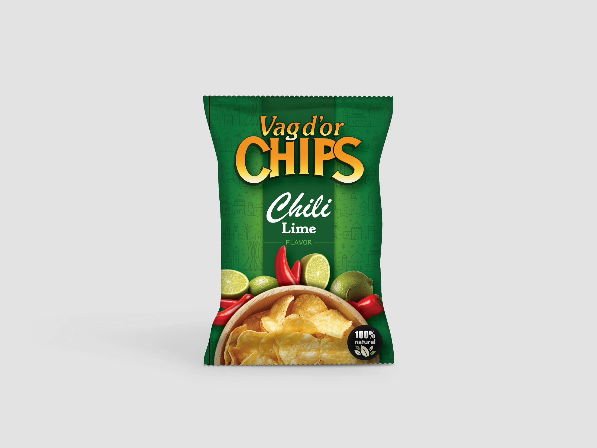

VAG D'OR - Exploring New Directions for a Classic Brand
Vag d'Or is a well-established legacy chips brand in Algeria, with strong recognition and a long-standing visual identity. This project was part of an official initiative to develop new flavors, requiring a fresh yet respectful design direction.
1. The Objective - Expanding Without Losing Identity
The goal was to introduce new flavor variants while maintaining the familiarity and trust associated with the brand. This meant working within existing constraints while exploring how far the visual system could evolve.

2. Concept Development - Iteration as a Process
I developed multiple design iterations, experimenting with color systems tied to flavors, packaging layouts, hierarchy, and visual elements to modernize the look while keeping it recognizable. Each variation aimed to balance innovation with brand continuity.

.png)
.png)
.png)
.png)
.png)
3. Adapting to Client Vision
Throughout the process, I worked to align the designs with the client's expectations, refining and adjusting concepts based on feedback. The challenge was not only creative, it was also about translating business needs into visual solutions.
4. Outcome - A Valuable Learning Experience
While the final direction was not adopted, the project provided real-world experience in client collaboration, iteration, and constraint-based design.
This exploration pushed the boundaries of how a legacy brand like Vag d'Or could evolve, and highlighted the importance of alignment between creative direction and client vision.
5. What This Project Represents
It reflects my ability to navigate established brand systems and still propose meaningful evolution:
Closing
Not every project results in a final release, but every iteration contributes to building a deeper understanding of design, collaboration, and brand evolution.